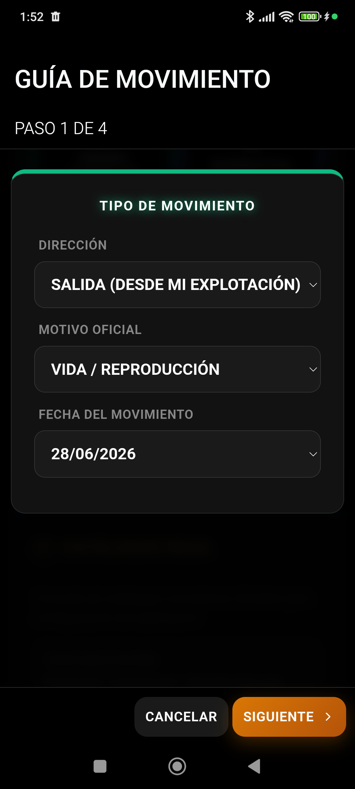

Guías DIMOE, Documentos ICA y Archivo Oficial · Guía v4.8.7
TRAZABILIDAD DOCUMENTAL OFICIAL

Listado y emisión de guías DIMOE y documentos sanitarios ICA.
1. Introducción a la Gestión Documental
El módulo de Documentos de Livestock Manager actúa como tu archivador oficial digital. Te permite almacenar, generar y verificar todas las autorizaciones administrativas necesarias para el transporte y venta de ganado.
2. Documentos Obligatorios
El sistema gestiona de forma centralizada los siguientes ficheros:
DIMOE (Documento de Identificación y Movimiento): Requisito indispensable para cualquier traslado de ovinos, caprinos o vacunos entre explotaciones o a matadero.
ICA (Información de la Cadena Alimentaria): Declaración obligatoria firmada por el ganadero para certificar que los animales no están en periodo de supresión de medicamentos antes de su sacrificio.
Certificados de Saneamiento: Informes veterinarios oficiales de campañas de saneamiento.
3. Flujo de Trabajo Documental
Para emitir y archivar documentos de traslados:
1
Expedición
Registrar salida o comercialización
➔
2
Generación
Autocompletar ICA y DIMOE
➔
3
Archivo
Guardado seguro en memoria local
➔
4
Compartir
Exportación rápida a transportista
Puedes consultar y reimprimir cualquier guía emitida desde el panel en Más → Documentos.
Livestock Manager Premium · v4.8.7 · Guía del Usuario Oficial
Livestock Manager Premium · v4.8.7 · Guía del Usuario Oficial